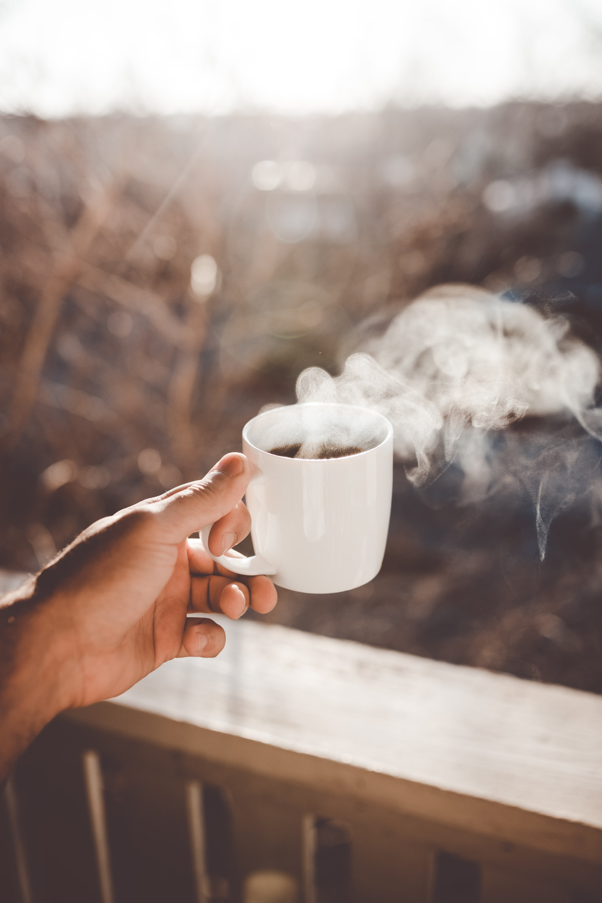

The Consumption of Coffee
The Dealy Consumption of Coffee!

Tea is alright but thank God for Coffee! If energy can be poured into a cup, then coffee is what it would be!. Though it is recommended to avoid coffee due to the caffeine content, there are hundreds of reasons we choose the energizing aromatic concoction above all. The fragrance itself can wake you up and pull you out of a tedious day. Made from roasted coffee beans, coffee is one of the most popular drinks in the world after tea. The African beverage is mainly known for its stimulating effects and bittersweet taste. Taste and smell of coffee are sometimes like chocolate with caramel and sometimes harsh and sour. Cappuccino, Espresso, Mocha, there is a type of coffee for everyone.
The Modern Days

Now a days life is fast so you need energy to keep up with it.This is the best reason why coffe is consumd so much.So many people can't start ther day whithout coffe. But many of those dont even know here coffe is even grown or what do you need to do to before you can drink it.The modern days coffe can be find in all types of form.Coffe is used from making cold drinks to even used for cakes and to seson all types of meats.Coffe now is getting used for all types of stuff and the consumption of coffe is just getting bigger and bigger is dose not seam to stop.
The Industry of Coffe

The coffee industry is growing at a significantly large compound annual growth rate of 5.5%, and the product is produced almost exclusively in developing nations. Of these regions, South America ranked as the largest coffee producer, with Brazil producing about 43.2 million bags of coffee. This is about 27 percent of the total 158.93 million bags of coffee globally produced each year. The major consumer demographics of this industry represent people ages 19 to 34, and a large reason the coffee market is expanding can be acquainted with the rise of demand from millennials as their consumption has increased almost ten percent. According to Business Insider, coffee is the second most sought-after commodity in the entire world, with an industry that is worth over $100 billion across the globe. In terms of exporting alone, the industry is valued at $20 billion and continues to be on the rise—on average, 500 billion cups of coffee are consumed on Earth every year.
The Magic Bean

This are some reason way is coffe so popular and why is loved all over the world form China to USA and is influence of caffe is incresing.